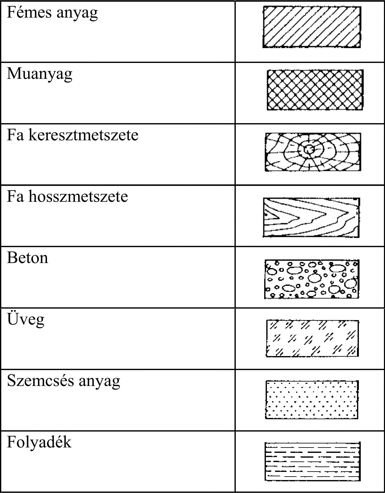
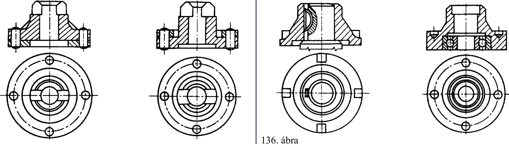

6. Metszeti ábrázolás 6.3. A metszeti ábrázolás sajátos szabályai 6.3.1. Az anyagtól független metszetjelölések Összeállítási rajzokon a csatlakozó alkatrészeket eltérő iránnyal és változó sűrűséggel vonalkázzuk. Ha a munkadarab jellegzetes alakjának iránya 45°-os, akkor a metszeti vonalkázás iránya 60°-os vagy 30°-os legyen. Határozatlan vagy nagy kiterjedésű csatlakozó elemek szelvényén elegendő csak a szegélyén lévő sávot vonalkázni. Vékony falú szerkezeti elemek elkülöníthetők egymástól, és szelvényeiket a metszeti vonalkázás helyett feketítjük. Az anyagfajták metszeti jelölése 135. ábra 135. ábra 6.3.2. Nem metszendő alkatrészek, részletek Ne rajzoljunk metszetben olyan alkatrészt vagy részletet, amelynek metszete nem ad több információt nézeténél! Az ábrázolási szabály szerint (136. ábra): - tömör hengeres alkatrészt (pl. tengelyt, csavart, szeget, orsót), - tömör egyszerű alkatrészt (pl. kúposszeget, éket, reteszt, golyót, fogantyút, kart, tartót, fogat, láncot, kapcsot), - nagy kiterjedésű tömör részletet (pl, küllőt, bordát, vékony falat) még akkor is nézetben kell ábrázolni, ha a részlet főirányával párhuzamos metszősík keresztülhalad rajta nem metszünk szeget), - nem metszünk kúpos szeget, éket - nem metszünk bordát - nem metszünk tengelyt hosszában - nem metszünk reteszt és golyót 38
 